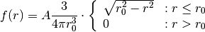
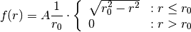

Bases: astropy.modeling.Fittable2DModel
Projected homogeneous radiating sphere model.
This model can be used for a simple PWN source morphology.
| Parameters: | amplitude : float
x_0 : float
y_0 : float
r_0 : float
normed : bool (True)
|
|---|
Notes
Model formula with integral normalization:

Model formula with peak normalization:

Attributes Summary
| amplitude | |
| param_names | tuple() -> empty tuple |
| r_0 | |
| x_0 | |
| y_0 |
Methods Summary
| evaluate(x, y, amplitude, x_0, y_0, r_0) | Two dimensional Sphere model function normed to integral |
| evaluate_peak_norm(x, y, amplitude, x_0, ...) | Two dimensional Sphere model function normed to peak value |
Attributes Documentation
Methods Documentation